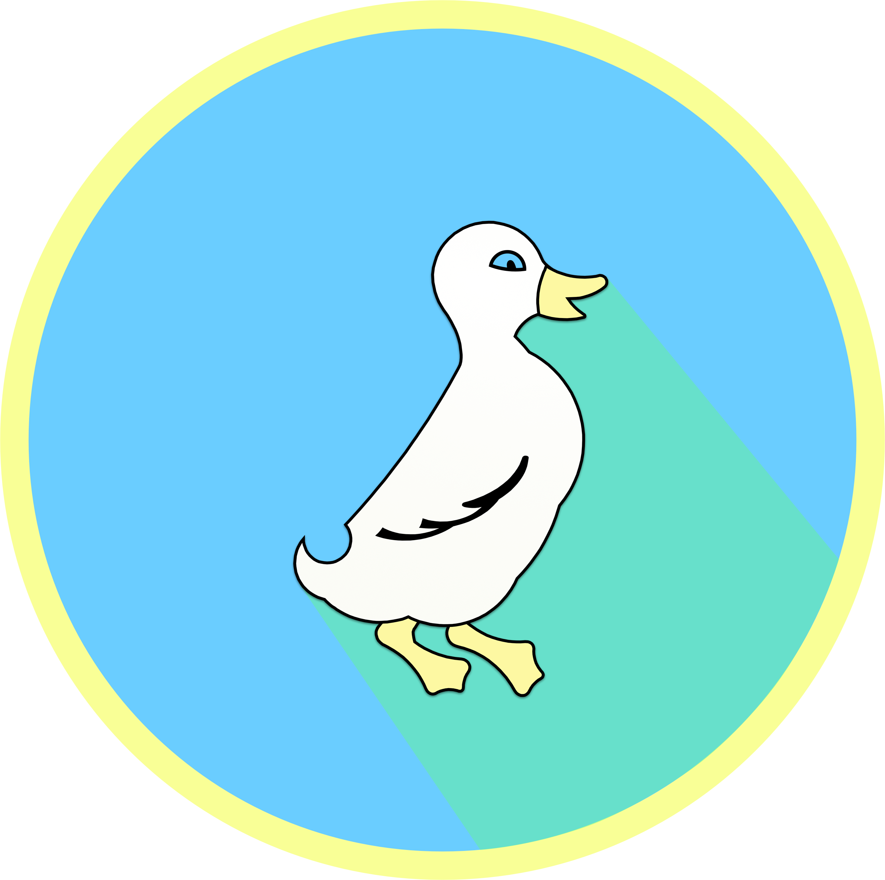
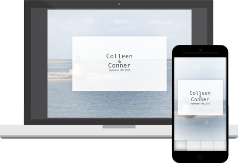

Projects
Wake Up Wars
An alarm clock app that forces you out of bed in the morning with the challenge of walking 50 steps. You can also challenge a friend to a Wake Up War and the first to complete the challenge wins the wager.
Check out the UX Process, my General Assembly presentation (desktop only), or check out the prototype below.
Logo Design
The first logo for a side business I am starting that sells apparel with local logos based on summer vacation locations.

Website Design & Development
